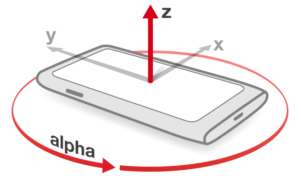
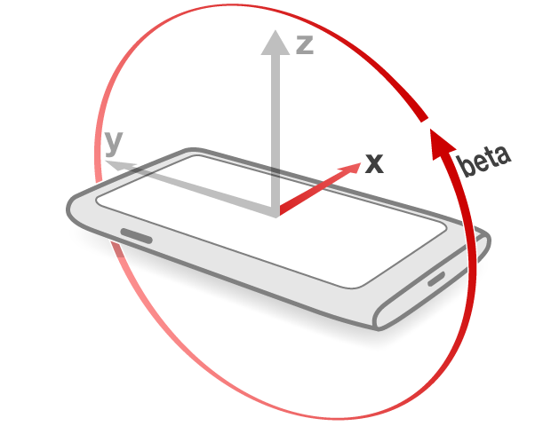
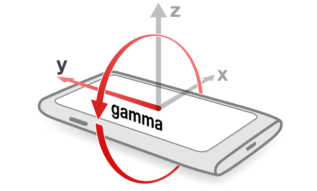

API W3C położenia urządzenia: wykrywanie położenia i przyspieszenia
Wstęp
Długo mówiło się, że aplikacje dedykowane mają przewagę nad aplikacjami sieciowymi, bo mogą korzystać z podzespołów urządzeń, np. żyroskopu czy przyspieszeniomierza. Od teraz te podzespoły mogą być wykorzystywane również przez strony internetowe, dzięki specyfikacji W3C Device Orientation (położenie urządzenia).
Korzystając z tego API możemy zarówno określać położenie urządzenia, jak i zbierać informacje o jego ruchach. Te dane są przydatne w różnych aplikacjach, a także grach sterowanych ruchem.
W tym artykule przyjrzymy się podstawom działania API położenia urządzenia, oraz kilku prostym przykładom.
Układ współrzędnych

Rycina 1: Schemat układu współrzędnych używanego w położeniu urządzenia.
Potrzebujemy punktu odniesienia, aby porównać zmianę kierunku i położenie sprzętu, jakkolwiek byłby ułożony. W tym celu obierzemy zwykły układ współrzędnych XYZ. Gdy położysz płasko swój aparat na blacie stołu z wyświetlaczem zwróconym do góry, osie układu będą przebiegały następująco: oś X pobiegnie z boku na bok (z lewa na prawo) urządzenia, dzieląc jego powierzchnię na górną i dolną połowę; oś Y pobiegnie z góry na dół, dzieląc wyświetlacz na lewą i prawą część; oś Z uniesie się z powierzchni ekranu ku niebu. Taki układ współrzędnych przedstawia rycina 1.
Skoro już oznaczyliśmy układ współrzędnych, możemy przedstawić sposób obracania urządzenia. Położenie urządzenia określa trzy rodzaje obrotu, a są to:
Alfa: Kąt obrotu wokół osi Z nazwano alfą. Przykładem tak obracającego się przedmiotu są śmigła helikopterów. Nie poruszają się one w górę ani w dół. Kręcą się jedynie wokół osi Z o „alfa” stopni w krótkim czasie. Przedział wartości to od 0 do 360 stopni.

Rycina 2: Obrót urządzenia wokół osi Z.
-
Beta: Kąt obrotu wokół osi X nazwano betą. Przykładowo, kiedy samolot odrywa się od pasu startowego, przemieszcza się przed siebie i jednocześnie podrywa w górę. W tej sytuacji obraca się wokół osi X. Przedział wartości to od -180 do 180 stopni.

Rycina 3: Obrót urządzenia wokół osi X.
-
Gamma: Kąt obrotu wokół osi Y nazwano gammą. Przykładowo, gdy samolot lecący prosto (ze skrzydłami równoległymi do ziemi) zechce skręcić, przybliża jedno ze skrzydeł do ziemi, oddalając drugie. Przedział wartości to od -90 do 90 stopni.

Rycina 4: Obrót urządzenia wokół osi Y.
Zdarzenie deviceorientation
Specyfikacja położenia urządzenia wprowadza zdarzenie o nazwie deviceorientation. Przy jego użyciu możemy odbierać zmianę przechylenia maszyny pod względem alfy, bety i gammy.
Nie wszystkie urządzenia (zwłaszcza laptopy) rejestrują swoje położenie, więc rozsądnie jest najpierw sprawdzić, czy tytułowe zdarzenie jest dostępne:
if (window.DeviceOrientationEvent) {
//twój kod
} else {
console.log('brak obsługi położenia urządzenia');
//w razie potrzeby, tu możesz dodać kod zastępczy
}Teraz możemy nasłuchiwać zdarzenia. Za każdym razem gdy urządzenie zostanie przechylone, odpala się zdarzenie, które możemy obsłużyć funkcją:
window.addEventListener('deviceorientation', przechwyt_położenia, false);Wewnątrz funkcji przechwyt_położenia możemy wykorzystać dane o ułożeniu aparatu:
function przechwyt_położenia (event) {
var alfa = event.alpha;
var beta = event.beta;
var gamma = event.gamma;
console.log('Położenie - alfa: '+alfa+', beta: '+beta+', gamma: '+gamma);
}Powyższa funkcja przedstawia, jak łatwe jest zdobycie wartości alfy, bety i gammy, odzwierciedlających obrót maszyny.
Obejrzyj naszą stronę przedstawiającą położenie urządzenia. W tym demie kolor tła strony zmienia się gdy poruszysz swoją maszyną. Wyświetlane są również wartości liczbowe alfy, bety i gammy.
Zdarzenie devicemotion
Istnieje również zdarzenie pomocne przy ocenianiu tempa, z jakim urządzenie przyspiesza: devicemotion. Odbiera ono wskazania przyspieszeniomierza i określa przyspieszenie wzdłuż osi X, Y i Z.
Pierwszą rzeczą jest (jak zwykle) sprawdzenie, czy mamy dostęp do zdarzenia devicemotion:
if (window.DeviceMotionEvent) {
// wkraczamy z naszym kodem
} else {
console.log('Ta maszyna nie podaje swojego przyspieszenia');
}Teraz będziemy nasłuchiwać w następujący sposób:
window.addEventListener('devicemotion', przechwyt_przyspieszenia, false);Następnie tworzymy funkcję wykorzystującą informacje o przyspieszeniu. Warto pamiętać, że istnieje sposób określenia przyspieszenia zarówno z udziałem grawitacji, jak i bez niego. Pierwsze zawarte jest we właściwości accelerationIncludingGravity, drugie w acceleration:
function przechwyt_przyspieszenia (event) {
var przyspieszenie_x = event.acceleration.x;
var przyspieszenie_y = event.acceleration.y;
var przyspieszenie_z= event.acceleration.z;
var przyspieszenie_g_x = event.accelerationIncludingGravity.x;
var przyspieszenie_g_y = event.accelerationIncludingGravity.y;
var przyspieszenie_g_z = event.accelerationIncludingGravity.z;
}Jednostką jest metr na sekundę do kwadratu (m/s2). Dostępne są właściwości określające przyspieszenie wzdłuż osi X, Y i Z, co widać w powyższym kodzie.
Obejrzyjcie nasze (*ekhem*) demo miecza świetlnego, które korzysta ze zdarzenia devicemotion i kilku warczących odgłosów umieszczonych przy pomocy znacznika <audio> z HTML5.
Zastosowanie i nadchodzące możliwości
Używając specyfikacji W3C o położeniu urządzenia, można tworzyć aplikacje sieciowe określające położenie i przyspieszenie urządzenia przy pomocy Javascriptu. To otwiera wiele niedostępnych im dotąd możliwości.
Położenie maszyny może zostać wykorzystane do rozpoznawania gestów. Przykładowo, sieciowy odtwarzacz muzyki może przejść do następnego utworu gdy potrząśniemy naszym sprzętem z odpowiednią siłą, albo tym samym gestem przejść wstecz. Gesty świetnie pasują także do gier i polepszają dostępność: możesz stworzyć kompletny system kontroli nad aplikacją dla ludzi, którym trudno przychodzi precyzyjne wskazywanie palcem na dotykowym telefonie.
Sprawa kompatybilności
Niestety, w tym momencie występuje kilka różnic we wdrożeniu zdarzenia device orientation w poszczególnych przeglądarkach mobilnych. Wierzymy, że wdrożenie Opery Mobile jest najbliższe specyfikacji, a tylko odrobinę bliżej niż wdrożenie Firefoksa. Jedyną różnicą jest przeciwne mierzenie alfy; zegarowe, a nie odwrotne do zegarowego (można to łatwo naprawić kroplą Javascriptu). Cała reszta działa taka samo, jak w Operze.Przeglądarki oparte na Webkicie, np. Mobile Safari tudzież domyślna przeglądarka Androida liczą alfę, betę i gammę każda na swój sposób. Mamy nadzieję, że przyszłe wydania tych przeglądarek będą bliższe specyfikacji, pozwalając twórcom aplikacji na łatwiejsze odczytywanie położenia sprzętu w ich dziełach.
Podsumowanie
Zdarzenia deviceorientation i devicemotion pozwalają tworzyć czadowe programy mobilne, od gier, poprzez programy rozszerzonej rzeczywistości, po zwykłe, lecz wysoce dopracowane aplikacje. API jest bardzo proste, łatwe do zrozumienia przez twórców, na dzień dzisiejszy (problemy międzyprzeglądarkowe będą ustępować) Opera Mobile 12 i inne ważniejsze przeglądarki mobilne obsługują je. To obiecująca technologia, powinna zostać rozpatrzona przy tworzeniu twojego nowego projektu!
Rich Tibbett z Opery napisał fantastyczny przykład użycia tej technologii — obejrzyj jego demo busoli.
This article is licensed under a Creative Commons Attribution 3.0 Unported license.
Comments
No new comments accepted.